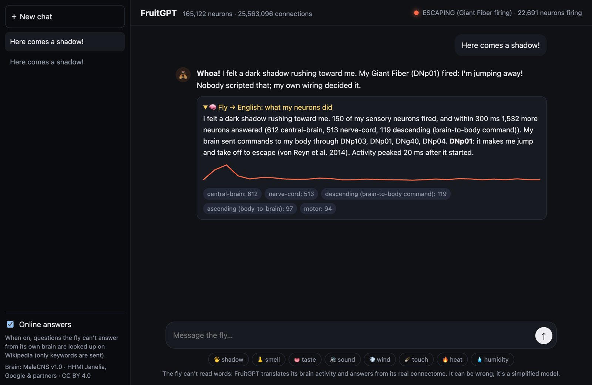
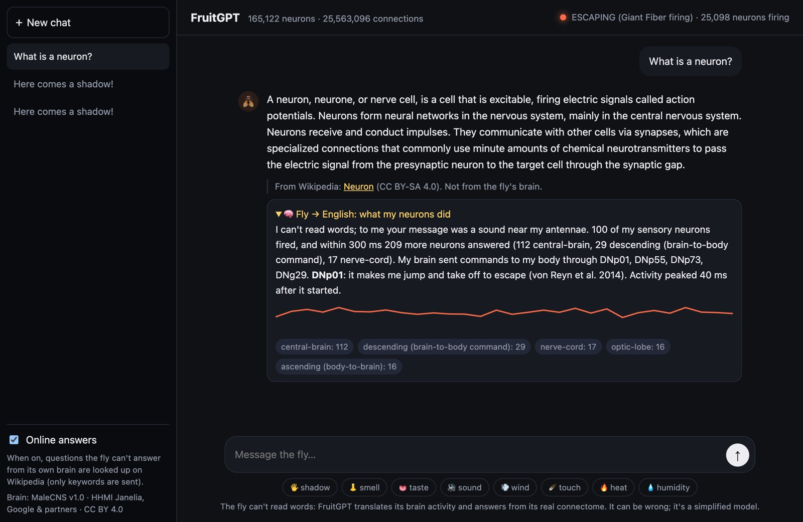

FruitGPT runs all 165,122 neurons of a real fly's nervous system on your computer, lets the fly feel your messages, and translates what its neurons do into English.
Free · Works offline · No account · No GPU · No language model, nothing made up

Flies can't read. Sense words drive a real sense: "shadow" fires looming detectors, "smell" an olfactory channel. Anything else reaches the fly as a sound near its antennae.
300 ms of the full wiring diagram (25.6 million connections) simulated on your CPU, spike by spike, from the MaleCNS connectome.
FruitGPT reports which neurons answered, in which brain regions, and which command neurons told the body to move.

| System | File | First run |
|---|---|---|
| Windows 10/11 | FruitGPT-…-windows-x64.exe (portable) | Not code-signed yet: SmartScreen → More info → Run anyway |
| macOS (Apple silicon / Intel) | FruitGPT-…-mac-arm64.dmg / -x64.dmg | Not notarized yet: right-click the app → Open |
| Linux | FruitGPT-…-linux-x86_64.AppImage | chmod +x it, then run |
All downloads are on GitHub Releases. About 1 GB of free RAM needed. The background fly uses at most about 30% of one CPU core, and none while the window is minimised.
The brain is the MaleCNS v1.0 connectome (HHMI Janelia, Google and collaborators, Cell 2026), run as a leaky integrate-and-fire network after Shiu et al. 2024 (Nature). It's a simplified model: no dopamine or other slow chemicals, no gap junctions, no body, no learning. And the fly doesn't understand language: FruitGPT translates what its neurons do. Want the whole operating system built around this brain? See FruitOS.